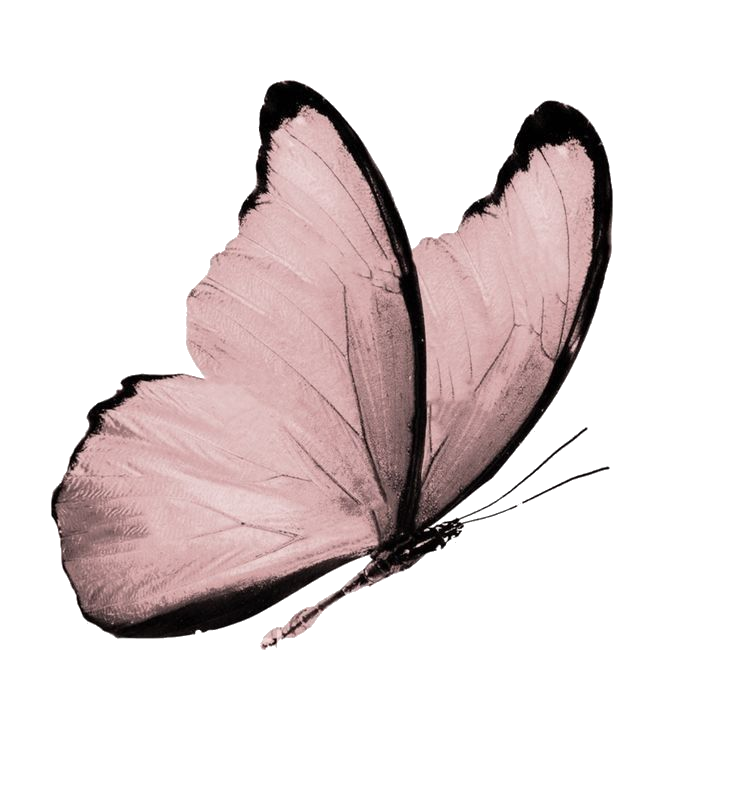
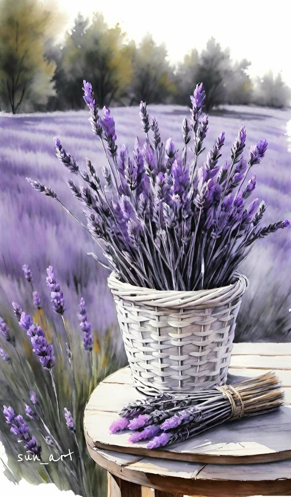

Did you know that every rose tells a story ?
That its colors and scents are not just a coincidence but carry meanings and messages? In this book, we will reveal the secrets of roses—from their rich history to their psychological benefits and the strangest types found around the world.

Camellia flower
Origin and History:
The camellia originated in East Asia, particularly in Japan, China, and Korea, where it was considered a royal flower and was cultivated in the gardens of palaces.
It comes in a variety of colors, such as white, red, pink, and yellow, with each color carrying its own special meaning.
Red CamelliaRepresents deep love and strong desire.
pink CamelliaSignifies admiration, tenderness, and caring for others.
Yellow CamelliaRepresents the desire for success and appreciation.

Black Baccara
- This rose is known for its very deep red color that appears velvety black under low lighting, giving it a mysterious and unique appearance.
- In fact, there are no completely natural black roses, but Black Baccara is one of the closest types to this color
The meaning of the Black Baccara
- Mystery and allure
- Deep love and passion
- Luxury and strength

blue moon
- Despite its name, the Blue Moon rose is not entirely blue; instead, it has a soft lavender hue with a silvery-blue tint, making it one of the most captivating roses.
- It carries a romantic and mysterious charm.
The Blue Moon rose symbolizes
- Mystery and dreams
- Rare and romantic love
- Tranquility and reflection

lilac
- Lilac is known as one of the most fragrant flowers in the world and is often used in the perfume industry for its soothing and distinctive scent.
- The lilac flower is available in shades of light purple, violet, pink, and even white, with purple being the most common and distinctive color.
Meaning of the Lilac Flower by Color
- Light PurpleFirst love, dreamy romance
- Deep VioletSpirituality and mystery.
- Pink Femininity and tenderness.

Baby’s Breath
- It is characterized by its tiny flowers that resemble clouds, often appearing in bright white, though there are also pink and purple varieties.
- Despite its delicate appearance, it has a long lifespan and withstands harsh conditions, making it a symbol of strength in gentleness.
Meaning of Baby’s Breath by Color
- whitePurity, innocence, and true love.
- pinkTenderness, delicate love, and femininity.
- BlueSerenity and tranquility.

chocolate rose
- It is distinguished by its deep red color with a chocolate-brown hue, making it one of the most mysterious and enchanting roses.
- Some varieties exhibit a very dark burgundy shade that appears brown under low lighting.
Meaning of the Chocolate Rose
- Mystery and allure
- Deep and enduring love
- Luxury and elegance

sunflower
- The sunflower is known for its ability to follow the sun throughout the day, a phenomenon called heliotropism.
- When the flower is young, it moves from east to west with the sun's movement, but as it matures, it remains facing the east.
Meaning of the Sunflower
- Happiness and positivity
- Strength and resilience
- Loyalty and devotion
- Good luck and success